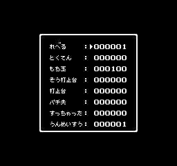
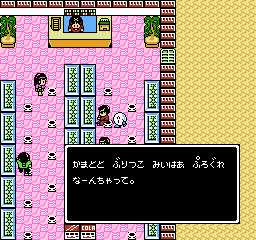

本作はパスワードを用いてゲーム状態のセーブ/ロードを行う。パスワードは 16 文字で、1 文字あたりの情報量は 6-bit である。よって、パスワード全体の情報量は 96-bit である。
パスワードは RAM $56-$65 に置かれる (この領域はセーブ/ロード時の中間バッファや生年月日バッファとしても使われる)。ゲーム状態とパスワードの相互変換は以下のルーチンで行われる:
| アドレス | 内容 |
|---|---|
$EECC | ゲーム状態をパスワードにセーブする。 |
$F028 | ゲーム状態をパスワードからロードすることを試みる。 |
なお、一部のパスワードはデバッグメニューを起動する裏技パスワードとして扱われる(後述)。
筆者作のパスワードライブラリ pachio1_password も適宜参照されたい (パスワードのセーブ/ロードおよび裏技パスワードの探索を実装している)。
パスワードには以下の情報が記録される ("bits" はパスワード内での情報量で、計 96-bit):
| 識別子 | アドレス | bits | 内容 |
|---|---|---|---|
fortune |
$4A |
6 | 運命数 (通常は 1〜6)。最後の店 (じょい) をクリアした際の性格分析メッセージに影響する。 |
score |
$4B-$4D |
24 | 得点 (6 桁 packed BCD, リトルエンディアン)。エクステンドや成績評価に影響する。 |
total_win |
$4E |
8 | 総打ち止め回数。成績評価に影響する。 |
stage_win |
$4F |
6 | 現在の面における打ち止め回数。規定回数に達すると面クリア可能となる。面クリア時に総打ち止め回数に加算される。 |
gameover |
$50 |
7 | ゲームオーバーになってコンティニューした回数。成績評価に影響する。 |
stage |
$51 |
3 | 現在の面 (通常は 1〜7)。 |
hand_ball |
$52-$54 |
24 | 持ち玉 (6 桁 packed BCD, リトルエンディアン)。 |
life |
$55 |
3 | 残機 (プレイ中の自機を含まない。通常は 0〜5)。 |
key |
6 | 暗号鍵。乱数により生成される。 | |
check |
9 | チェックコード。これが正しくないとロードが失敗する。 |
パスワードとして入力可能な文字は全部で 90 種あるが、正規のパスワード内に現れる文字は 64 種のみであり、残りの 26 種はロード時に特定の正規の文字と同等に扱われる。前者 64 種を「正規文字」、後者 26 種を「代替文字」と呼ぶ。
パスワード文字コード表 (RAM $56-$65 上の値) を以下に示す。色の薄いものは代替文字で、対応する正規文字を付記している。なお、"SP" は空白を意味する:
| x0 | x1 | x2 | x3 | x4 | x5 | x6 | x7 | x8 | x9 | xA | xB | xC | xD | xE | xF | |
|---|---|---|---|---|---|---|---|---|---|---|---|---|---|---|---|---|
| 2x | SP(わ) | |||||||||||||||
| 3x | ０(ぶ) | １(べ) | ２(ぼ) | ３(ぱ) | ４(ぴ) | ５(ぷ) | ６(ぺ) | ７(ぽ) | ８(あ) | ９(い) | ||||||
| 4x | ||||||||||||||||
| 5x | ||||||||||||||||
| 6x | が | ぎ | ぐ | げ | ご | ざ | じ | ず | ぜ | ぞ | だ | ぢ(で) | づ(ど) | で | ど | |
| 7x | ば | び | ぶ | べ | ぼ | ぱ | ぴ | ぷ | ぺ | ぽ | ||||||
| 8x | ||||||||||||||||
| 9x | ||||||||||||||||
| Ax | 。(ろ) | 「(わ) | 」(が) | 、(ぎ) | を(げ) | ゃ(ぞ) | ゅ(だ) | ょ(で) | っ(ど) | |||||||
| Bx | あ | い | う | え | お(か) | か | き | く | け | こ | さ | し | す | せ | そ | |
| Cx | た | ち | つ | て | と | な | に | ぬ(の) | ね(は) | の | は | ひ | ふ | へ | ほ | ま |
| Dx | み | む | め | も | や | ゆ | よ | ら | り | る | れ | ろ | わ | ん(が) |
パスワードに記録すべき情報を格納したバイト列を「セーブデータ」と呼ぶ。セーブデータは形式によらず 16 バイトで、RAM $56-$65 上で in-place に読み書きされる。
ゲーム状態は以下のステップを経てパスワードに変換される:
まずゼロクリアされた 16 バイトの配列 bytes を用意する。今後、これをセーブデータ(形式不問)操作用バッファとして用いる。
事前に乱数を用いて 6-bit の暗号鍵を生成しておく。そして、bytes 内にゲーム状態および暗号鍵を以下のように詰め込む (ビット列は MSB-first で各バイトに詰め込まれる。たとえば、fortune は bytes[1] の bit2-7 に入る。なお、空欄は全て 0 である)。ここで、check_lo はチェックコード bit0-7, h はチェックコード bit8 の格納予定地だが、この時点ではまだ 0 で埋められている:
0 1 2
0 1 2 3 4 5 6 7 8 9 0 1 2 3 4 5 6 7 8 9 0 1 2 3 4 5 6 7 8 9
+-+-+-+-+-+-+-+-+-+-+-+-+-+-+-+-+-+-+-+-+-+-+-+-+-+-+-+-+-+-+
| check_lo | fortune | score[0] | score[1] |
+-+-+-+-+-+-+-+-+-+-+-+-+-+-+-+-+-+-+-+-+-+-+-+-+-+-+-+-+-+-+
3 4 5 6
0 1 2 3 4 5 6 7 8 9 0 1 2 3 4 5 6 7 8 9 0 1 2 3 4 5 6 7 8 9 0 1
+-+-+-+-+-+-+-+-+-+-+-+-+-+-+-+-+-+-+-+-+-+-+-+-+-+-+-+-+-+-+-+-+
| score[2] | total_win | stage_win | gameover |stage|
+-+-+-+-+-+-+-+-+-+-+-+-+-+-+-+-+-+-+-+-+-+-+-+-+-+-+-+-+-+-+-+-+
6 7 8 9
2 3 4 5 6 7 8 9 0 1 2 3 4 5 6 7 8 9 0 1 2 3 4 5 6 7 8 9 0 1 2 3 4 5
+-+-+-+-+-+-+-+-+-+-+-+-+-+-+-+-+-+-+-+-+-+-+-+-+-+-+-+-+-+-+-+-+-+-+
| hand_ball[0] | hand_ball[1] | hand_ball[2] |life |h| |
+-+-+-+-+-+-+-+-+-+-+-+-+-+-+-+-+-+-+-+-+-+-+-+-+-+-+-+-+-+-+-+-+-+-+
1 1 1
9 0 1 2
6 7 8 9 0 1 2 3 4 5 6 7 8 9 0 1 2 3 4 5 6 7 8 9 0 1 2 3 4 5 6 7
+-+-+-+-+-+-+-+-+-+-+-+-+-+-+-+-+-+-+-+-+-+-+-+-+-+-+-+-+-+-+-+-+
| | key |
+-+-+-+-+-+-+-+-+-+-+-+-+-+-+-+-+-+-+-+-+-+-+-+-+-+-+-+-+-+-+-+-+
次に 9-bit のチェックコードを求め、結果を check_lo および h の部分に格納する。チェックコード計算処理はたとえば Rust では以下のように書ける (過程全体を通じて u16 の下位 9-bit 以外は無視してよい):
fn calc_check(bytes: [u8; 16]) -> u16 {
let key = bytes[15];
let mut check: u16 = 0;
for b in bytes.into_iter().rev() {
check = check.wrapping_add(u16::from(key));
check ^= u16::from(b);
check <<= 1;
if check & (1 << 8) == 0 {
check ^= 0x79
}
}
check & 0x1FF
}
最後に bytes に対して簡単なスクランブル処理を施し、その結果が 8-bit 形式セーブデータとなる。スクランブル処理は bytes[1..=10] の各バイトに bytes[0] (check_lo) を加算するものであり、たとえば Rust では以下のように書ける:
fn scramble8(bytes: &mut [u8; 16]) {
let check_lo = bytes[0];
for b in bytes[1..=10].iter_mut() {
*b = b.wrapping_add(check_lo);
}
}
8-bit 形式セーブデータにおいて、bytes[0..=11] の各バイトは上位 2-bit に何らかの情報を持っている。これらを以下のように bytes[11..=14] へ移動し、bytes 内の全てのバイトの情報量を 6-bit にする。ここで、hi2(x) は x >> 6 を意味する:
bytes[11] bit0-5 に hi2(bytes[0]) | (hi2(bytes[1]) << 2) | (hi2(bytes[2]) << 4) を格納する。bytes[12] bit0-5 に hi2(bytes[3]) | (hi2(bytes[4]) << 2) | (hi2(bytes[5]) << 4) を格納する。bytes[13] bit0-5 に hi2(bytes[6]) | (hi2(bytes[7]) << 2) | (hi2(bytes[8]) << 4) を格納する。bytes[14] bit0-5 に hi2(bytes[9]) | (hi2(bytes[10]) << 2) | (hi2(bytes[11]) << 4) を格納する。次に、bytes に対して暗号鍵に依存するスクランブル処理を施し、その結果が 6-bit 形式セーブデータとなる。スクランブル処理は bytes[0..=14] の各バイトに対して暗号鍵の下位 2-bit に依存するバイト列を XOR するものであり、たとえば Rust では以下のように書ける:
fn scramble6(bytes: &mut [u8; 16]) {
const TABLE: [[u8; 15]; 4] = [
[0x16, 0x03, 0x1A, 0x17, 0x09, 0x12, 0x1A, 0x17, 0x10, 0x03, 0x1A, 0x04, 0x1A, 0x01, 0x09],
[0x32, 0x1B, 0x2D, 0x12, 0x32, 0x1B, 0x2D, 0x12, 0x31, 0x1B, 0x2D, 0x22, 0x00, 0x2B, 0x2D],
[0x0D, 0x12, 0x1B, 0x1B, 0x31, 0x2D, 0x19, 0x01, 0x15, 0x08, 0x1F, 0x15, 0x28, 0x32, 0x2E],
[0x07, 0x09, 0x07, 0x0A, 0x0D, 0x34, 0x0D, 0x14, 0x27, 0x28, 0x2C, 0x2F, 0x3E, 0x36, 0x1F],
];
let xor_array = &TABLE[usize::from(bytes[15] & 3)];
for (b, &xor) in bytes[..15].iter_mut().zip(xor_array) {
*b = (*b ^ xor) & 0x3F;
}
}
なお、このスクランブル処理は対称な操作 (2 回行うと元に戻る) なので、逆変換時も全く同じことを行えばよい。
6-bit 形式セーブデータ内の各バイト (上位 2-bit は 0 とする) を以下の規則で正規文字に変換したものがパスワードとなる:
0x00..=0x03 => 0xB1..=0xB4 ('あ'..='え')
0x04..=0x14 => 0xB6..=0xC6 ('か'..='に')
0x15..=0x28 => 0xC9..=0xDC ('の'..='わ')
0x29..=0x33 => 0x61..=0x6B ('が'..='だ')
0x34..=0x3F => 0x6E..=0x79 ('で'..='ぽ')
ロード処理は基本的にはセーブ処理の逆を行うだけである。つまり、パスワードは以下のステップを経てゲーム状態に変換される:
基本的にはセーブ時の処理の逆を行うだけである。代替文字は対応する正規文字と等価に扱われる (文字コード表を参照)。
セーブ時の処理の逆を行うだけである。
基本的にはセーブ時の処理の逆を行うだけである。チェックコードが正しくない場合、不正なパスワードとみなされてロードは失敗する。
なお、ゲーム状態に関する値域チェックは行われないので、不正な値をロードさせることもできる。たとえば以下のような現象が確認されている:
暗号鍵とチェックコードを除いたゲーム状態が全てゼロクリアされているようなパスワードは裏技パスワードである。裏技パスワードをロードすると以下のようなデバッグメニューが起動し、ゲーム状態を編集した上でプレイを開始できる:
デバッグメニュー内の「れべる」は現在の面、「パチ夫」は残機、「すっちゃった」はゲームオーバー回数を意味する。なお、デバッグメニューにおいては運命数/現在の面/残機に対する値域チェックが行われており、値が不正だとプレイを開始できない。
裏技パスワードは正規文字の範囲では 64 種存在する(暗号鍵に依存)が、このうち「かまととぶりつこみいはあぷろぐれ」(カマトト ぶりっ子 ミーハー プログレ) が開発者の意図したパスワードと思われる。代替文字も許した裏技パスワードは 27482 種存在するが、上記以外に意味ありげな文字列は見当たらなかった。
ちなみに、続編の『パチ夫くん2』には上記の裏技パスワードを喋るNPCが存在する (どりーむ店などに出現):
